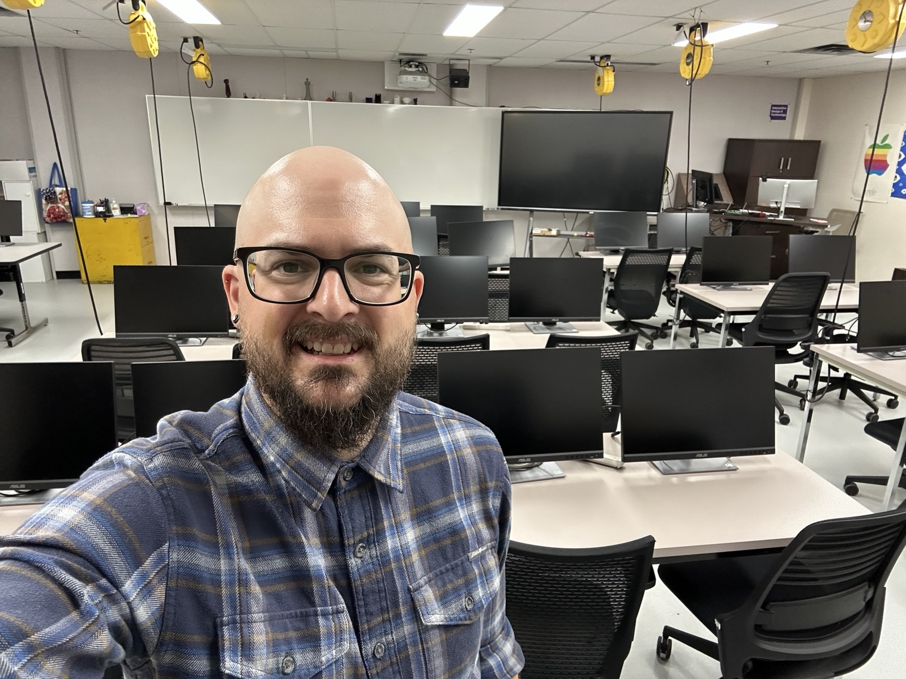
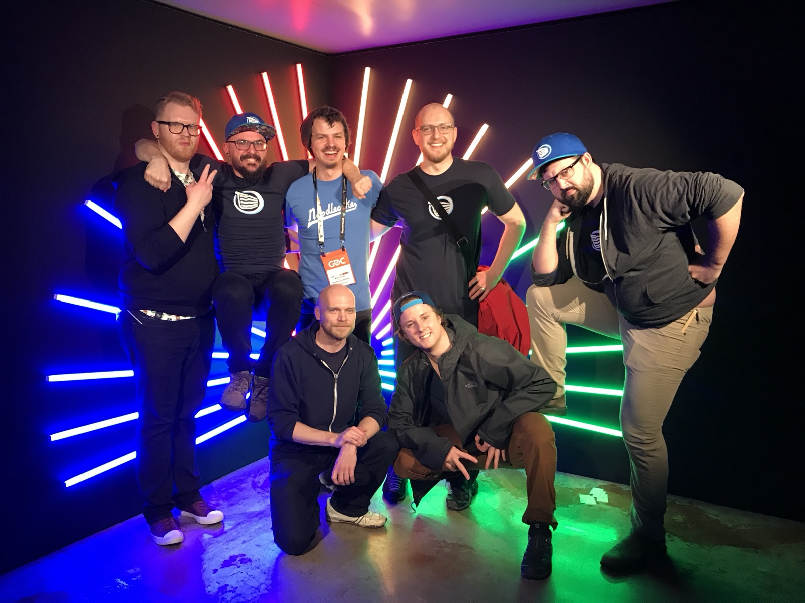
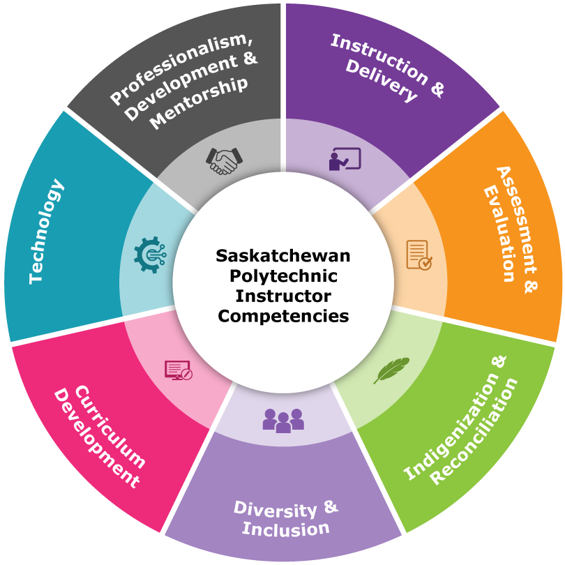

About

I'm an educator and software developer focused on front-end development, mobile applications, and UI/UX design. I've helped launch dozens of websites, ship hundreds of apps/games, and taught students about technology, computer science, programming, and design. My teaching philosophy is rooted in Universal Design for Learning, Work Integrated Learning, and demystifying technology. Currently I am in Instructor at Saskatchewan Polytechnic in the Interactive Design & Technology program.
I began my professional career in 2009 as a Web Developer at zu, a rapidly growing creative agency in Saskatoon. An opportunity arose for me to develop a mobile application for a client. I grew into being the team lead for the mobile development team and helped ship several iOS apps.

In 2012 I jumped at the opportunity to join a small startup called Noodlecake. Starting at a Senior Developer I helped the team port and publish several mobile games. As the company grew, I filled the role of Director of Publishing, overseeing the release of dozens more games.
In 2018 I started sessional lecturing at the University of Saskatchewan in the department of Computer Science part time. I had always like presenting and felt passionately about democrotizing basic computer programming knowledge. Throughout the next few years I taught first year and some third year courses.
Feeling tired and burnt out after Noodlecake was acquired, I landed at another creative agency. At Territorial I lead the development of a mental health support app and a mobile storytelling platform.
Instructor Competencies

The Instructor Competencies articulate the knowledge, skills, and attitudes necessary to be a successful instructor at Saskatchewan Polytechnic, and provide a framework for continuous professional development.
As part of Learners, Instruction & Fundamentals of Teaching (LIFT) program, LIFT-1008 Instructional ePortfolio course, faculty are tasked with collecting artifacts and accompanying reflections that align with each instructor competency.
Click on the instructor competencies below to view my artifacts and reflections as of February 5, 2026.